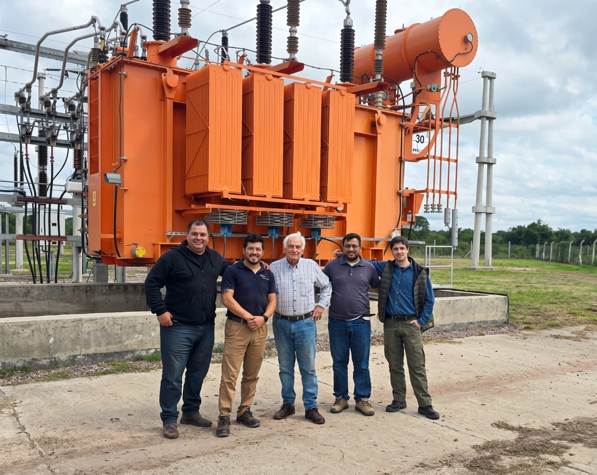
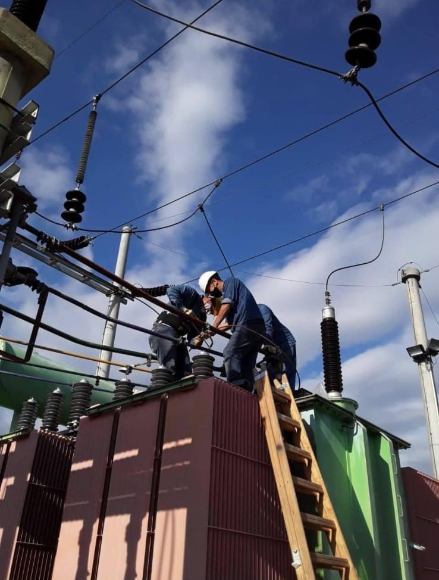

Brindamos ingeniería, diagnóstico y mantenimiento de alta precisión orientados a parques solares, estaciones transformadoras y sistemas industriales complejos en toda la región.
En Electro Test somos una empresa especializada en ingeniería, diagnóstico y mantenimiento de sistemas eléctricos de Media y Alta Tensión.
Trabajamos sobre infraestructura eléctrica crítica en parques solares, estaciones transformadoras e instalaciones industriales, brindando servicios orientados a preservar la integridad de los activos y asegurar la continuidad de las operaciones de nuestros clientes.
Nuestro trabajo combina experiencia técnica, ensayos eléctricos, diagnóstico de activos y mantenimiento preventivo, permitiendo identificar condiciones de riesgo, anticipar fallas catastróficas y tomar decisiones técnicas oportunas basadas en datos duros del estado de las instalaciones.
"Nuestro compromiso es brindar respuestas técnicas precisas, seguras y confiables para instalaciones donde la disponibilidad y la continuidad del servicio son fundamentales."

Contamos con presencia estratégica en el NOA para dar una respuesta inmediata, ágil y altamente coordinada en el lugar de las operaciones.
Soporte e Ingeniería Zona Sur NOA
Ing. Sonzini Pablo
Ing. Zarzuelo Guillermo
Soporte y Operación Zona Norte NOA
Orozco Diego
Ing. Baigorrí Angel Sebastian
Ejecutamos ensayos normados, configuraciones de campo y mantenimiento integral bajo los más estrictos estándares de seguridad de la industria.

Registro fotográfico real de operaciones Electro Test en la región.
Respaldamos nuestro trabajo en campo con la ejecución de servicios críticos en plantas de generación limpia e instalaciones de distribución troncal.
Puesta en servicio, ensayos dialécticos y mantenimiento preventivo de plantas de generación renovable.
Intervención en seccionadores, transformadores de potencia de ET y sistemas de comando.
Ensayos y mantenimiento en redes troncales de MT/AT, protecciones y telecontrol.
Diagnóstico y mediciones funcionales de celdas de media tensión y puesta a tierra.